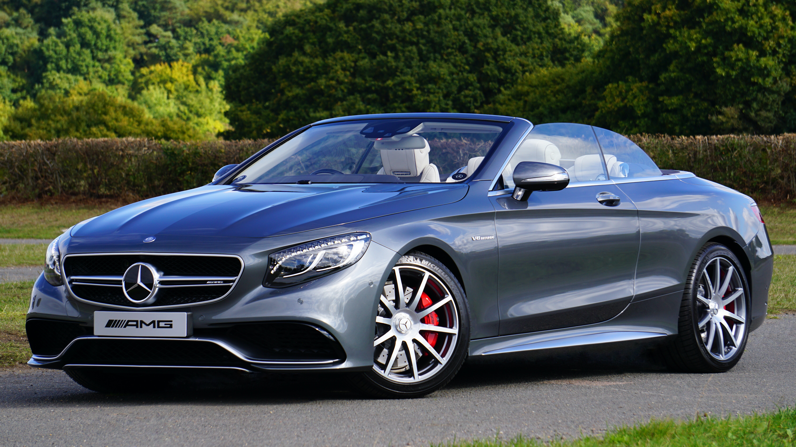

Cars for rent
BMW M2

The design and idea behind the first-ever BMW M2 Coupé stem from the historical roots of BMW M GmbH. The car combines classic sporty versatility with a classic rear-wheel drive with the precision and grace of a modern M car. The distinctive front and rear aprons improve the airflow and pneumatic dynamics. Compatible sports suspension and the powerful six-cylinder M TwinPower Turbo petrol engine ensure impressive performance. (For more information click on the picture)
Mercedes C63 AMG

It is the compact supercar of the V8 family for all occasions. The Mercedes-AMG C63 is not only available in two power outputs, but also in four full-body styles. You can get the C63 Coupe with its tasty, disgusting wide door and two doors, or the C63 Cabriolet with fabric roofs. Do you need four doors? Then choose between the C63 salon, the coolest of the longest: the rare and special C63. All four variants are available in standard 463bhp / 479lb ft C63 or in C63 S tone, complete with 503bhp and 516lb ft, racing mode and traction control system that allows you to increase or request the help you want. (For more information click on the picture)
Audi RS7

Its 4.0-litre V8 twin-turbo engine produces the same 592 horsepower as the previous RS7's performance, but there is more torque plus a gentle hybrid system that eliminates fuel consumption by allowing the engine to travel at short distances, stopping/starting to ride at speeds of up to 13 mph . The V8 can also be converted to V4 under light throttle loads. (For more information click on the picture)